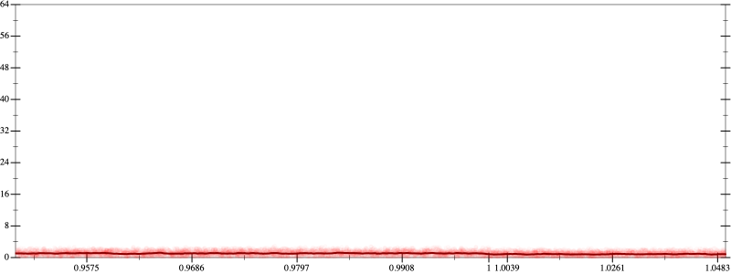
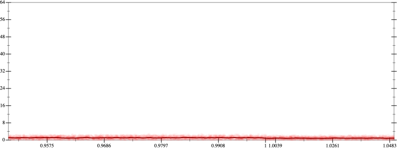

Initial program 1.0
\[-1.5 \cdot x + 2.5 \cdot \left(\left(x \cdot x\right) \cdot x\right)\]
- Using strategy
rm Applied add-log-exp1.0
\[\leadsto -1.5 \cdot x + \color{blue}{\log \left(e^{2.5 \cdot \left(\left(x \cdot x\right) \cdot x\right)}\right)}\]
Applied add-log-exp1.0
\[\leadsto \color{blue}{\log \left(e^{-1.5 \cdot x}\right)} + \log \left(e^{2.5 \cdot \left(\left(x \cdot x\right) \cdot x\right)}\right)\]
Applied sum-log1.0
\[\leadsto \color{blue}{\log \left(e^{-1.5 \cdot x} \cdot e^{2.5 \cdot \left(\left(x \cdot x\right) \cdot x\right)}\right)}\]
Applied simplify0.8
\[\leadsto \log \color{blue}{\left(e^{-1.5 \cdot x} \cdot {\left(e^{2.5}\right)}^{\left({x}^{3}\right)}\right)}\]
 
